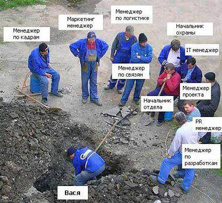

Чўпон кўп бўлса, қўй ҳаром ўлади!

Ўзбекча менежментда иш бошлаш жараёни бўладими ёки юриб турган бизнес - одатда ишчидан хўжайин кўп, хўжайин кўп бўлмаган холда сал сиёсатга ва гапга уста ишчилар дарров хўжаин ясашади.
Ўзбекча менежментда бундай муаммоли ҳолатлар талайгина:
➡️1. Таъсисчи раҳбарга қўшимча равишда аравани ўнгга ёки сўлга кайфиятига қараб тортиб туриши.
➡️2. Ишчилар онда сонда фурсат пайдо бўлганда ўзидан раҳбар ясаши
➡️3. Топшириқлар сан-салар бўлиб, Ит итга, ит қуйруғига буюради - дегандек, асосий масала сарсон бўлиши.
➡️4. Ходимлар битта ишни қойил қилиб қўйиб (тарихда) ўзидан доҳий ясаши.
➡️5. Вазифа бажаришга киришиш ўрнига уни атрофлича ва “танқидий” чиғириқдан ўтказиб олиш, натижада вақт ҳам сарф бўлиб, иш эса бажарилмасдан қолиши.
➡️6. Раҳбарлар “Бек” лиги ошиб тошиб, бора бора техник юмушларни ўзига эп билмай қолиши
➡️7. Ходимлар жамоада бир бирига ҳаддан ортиқ муҳаббат қўйиши, ёки акси шахсий адоватда бўлиши.
➡️8. Ишлаш шиддатни бошқаларга қараб мослаб олиш, ҳамма секин ишласа ўша режимга ўтиб олиш, тез ишласа, секин ишлашини кутиб туриш
➡️9. Маддоҳлик, сохта мулозамат, катта кетиш, фикрини изҳор этига қўрқиш, ёпиқлик ва ҳоказо.
➡️10. Маҳоратда ўсиш ўрнига, лавозимда ўсиш пайида, ҳар қандай қабиҳликга бориш.
➡️11. Раҳбарлар ходимларни ўстиришда уларнинг профессионал маҳоратига эмас, балки (“свой”лик) содиқлик даражасига қараб баҳо бериши.
…
Бундай муаммоларни яна узоқ давом эттириш мумкин, лекин аниқ нарса шуки, бу ҳолатлар барчаси натижадорлик ва самарадорликга қаттиқ таъсир этади.
🎚Яна бир иллат - меҳнат ўрнига гап ташиш, чақимчилик, ташувчилик, ғийбат, етказадиган маълумот қолмаганда эса уни сунъий ясаш (“қоқилиб кетди”ни - “думалаб тушди”гача).
Эслаб қолинг ходим қиймати унинг меҳнатининг сифатида, иш билишида, инорматорлар эса одатда тез ўзгаради.
🎧🎧🎧🎧🎧
Инсон ўсмас экан - жамият ўсмайди!
П/с: Сиз яна қандай менеджмент муаммоларни келтира оласиз?
(Комментарийда фикр қолдиринг!)
📝Яқинларга улашинг♾